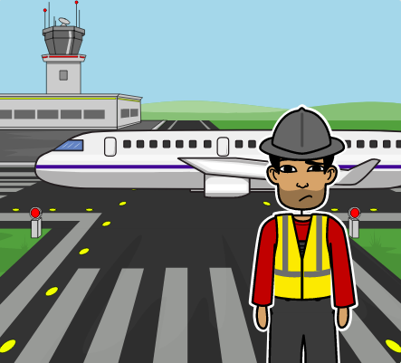

Início da História

Seu Antenor é o carregador de cargas de um aeroporto e hoje ele está recebendo várias cargas para colocar no avião, porém o avião que vai levá-las tem capacidade máxima de apenas 500kg, o que passa do peso total que todas as cargas possuem, ou seja, algumas cargas não poderão ir no voo. Então, Seu Antenor pediu a sua ajuda para decidir quais cargas devem ir no avião, de modo que ele obtenha o maior lucro possível.